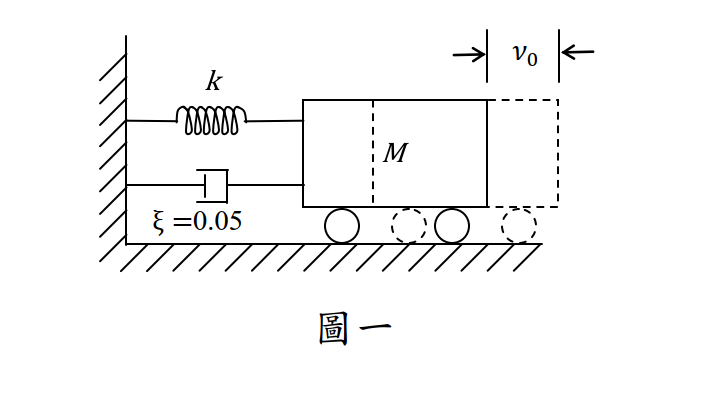
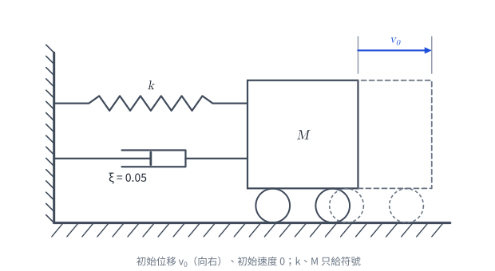
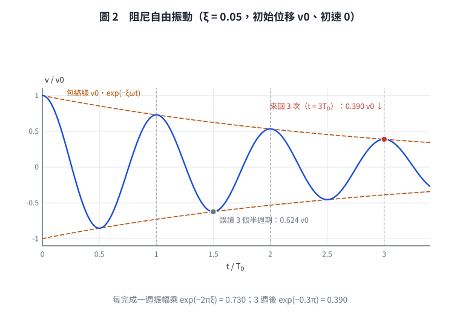

📄 題目正本：考卷原文・附圖・判讀清單（已確認）
SD-2017-1 題目正本
本檔只記錄考卷上寫了什麼、圖上畫了什麼，不含任何解法。解析見同資料夾
SD-2017-1.md。
判讀清單經使用者確認前，狀態為「待確認」；確認後本檔原則上不再修改（改動須回考卷原圖並記 log）。
| 項目 | 內容 |
|---|---|
| 考卷 | raw/exams/SD-2017_結構動力分析與耐震設計.pdf，第 1 頁（正面），第一題 |
| 考年 | 2017（民國106年）專技高考結構工程技師「結構動力分析與耐震設計」 |
| 配分 | 25 分 |
| 附圖 | SD-2017-1-fig-1.png（圖一，舊擷取，清晰、無雜訊） |
| 判讀狀態 | 已確認（2026-11-15 使用者授權依 Claude 建議確認。原轉錄：2026-11-15 轉錄；PyMuPDF 110 dpi 整頁＋400–450 dpi 局部放大，PDF 文字層核對原文；盲讀於開啟解析前完成） |
1. 考卷原文（逐字）
一、單自由度系統如圖一，令阻尼比（Damping ratio）$\xi=0.05$，初始位移 $v_0$，初始速度 0，試求此系統來回震動 3 次後，振幅（Amplitude）為何？（25 分）
（設 $\omega=\dfrac{k}{M}$，$\omega_D=\sqrt{1-\xi^2}\,\omega\doteqdot\omega$，$\sqrt{1+\xi^2}\doteqdot1$，$\tan^{-1}\xi\doteqdot0$）
（「$\omega=\dfrac{k}{M}$」照考卷原文，少了根號，應為 $\omega=\sqrt{k/M}$；「震動」照考卷原文。）
2. 考卷給的公式、附表與參數
- 考卷在題文括號內給的設定（照錄）：$\omega=\dfrac{k}{M}$（照考卷，筆誤，見 §1）、$\omega_D=\sqrt{1-\xi^2}\,\omega\doteqdot\omega$、$\sqrt{1+\xi^2}\doteqdot1$、$\tan^{-1}\xi\doteqdot0$。
- 給定：$\xi=0.05$、初始位移 $v_0$（符號）、初始速度 0；$k$、$M$ 只有符號。
- 考卷沒有給：$k$、$M$、$v_0$ 的數值（答案為 $v_0$ 的倍數）；「振幅」的定義（峰值位移或包絡線）。
- 卷首注意事項：㈠可以使用電子計算器。㈡不必抄題，作答時請將試題題號及答案依照順序寫在試卷上，於本試題上作答者，不予計分。㈢本科目除專門名詞或數理公式外，應使用本國文字作答。考試時間：2 小時。
3. 附圖

證據圖 SD-2017-1-fig-1.png（舊擷取；與考卷 450 dpi 局部核對內容一致）
圖面文字照錄：k、M、ξ =0.05、v0、圖一
4. 判讀清單
| # | 項目 | 判讀 | 圖上／題文依據 | 把握 |
|---|---|---|---|---|
| 1 | 「來回震動 3 次」 | 完成 3 個完整週期（來回一次＝一週），所求為 $t=3T_D$ 時的振幅 | 題文「來回」；考卷給 $\omega_D\doteqdot\omega$ 供求 $T_D$ | 確定（解讀） |
| 2 | 「振幅」與題給近似 | 考卷給 $\sqrt{1+\xi^2}\doteqdot1$、$\tan^{-1}\xi\doteqdot0$，表示振幅包絡係數取 $v_0$、相位角取 0 | 題文括號 | 確定（解讀） |
| 3 | 考卷公式筆誤 | $\omega=\dfrac{k}{M}$ 少了根號，視為 $\omega=\sqrt{k/M}$；本題答案為 $v_0$ 的倍數，不受影響 | 題文括號（400 dpi 目視無根號） | 確定 |
| 4 | 系統 | 單自由度：彈簧 $k$ 與阻尼器並聯於固定牆與質塊 $M$ 之間，質塊在滾輪上水平移動 | 圖一 | 確定 |
| 5 | 初始條件 | 初始位移 $v_0$ 向右（虛線位置）、初始速度 0（自由振動，無外力） | 圖一尺寸線 $v_0$ 由實線質塊右緣量至虛線外框右緣；題文 | 確定 |
| 6 | 阻尼比 | $\xi=0.05$（阻尼器旁標示，題文同） | 圖一、題文 | 確定 |
| 7 | 考卷沒有給 | $k$、$M$、$v_0$ 數值；外力 | 題文 | 確定 |
轉錄：2026-11-15（SD-U1-3 題目正本推廣・批 3）
確認：2026-11-15 使用者授權依 Claude 建議確認（SD-U1-3 題目正本推廣・批 3，關卡一）
考題編號：SD-2017-1
主分類： SD-U1-3 單自由度、多自由度系統之動態分析及應用
副分類： SD-U1-1 結構動力基本性質及原理
分析方法： SDOF動力分析
標籤： SDOF 自由振動 欠阻尼 對數衰減率 振幅衰減 阻尼比 初始條件 包絡線
1. 題目（考卷原文見題目正本）
考卷原文、公式／附表、附圖與判讀清單（已確認）見
SD-2017-1-problem.md。本節只列解題時最容易讀錯的地方與本解使用的記號；題意以題目正本為準。

重繪自考卷附圖，依題目正本判讀清單；本圖攔下的判讀錯誤：初始位移 v0 向右、初速 0，為自由振動；考卷的 ω＝k/M 少了根號。
常見誤讀
| 項目 | 正確判讀 | 常見誤讀 |
|---|---|---|
| 考卷公式 | 括號內「$\omega=k/M$」少了根號，視為 $\omega=\sqrt{k/M}$（判讀 #3）；答案為 $v_0$ 的倍數，不受影響 | 照抄成 $\omega=k/M$ 帶入週期 |
| 「來回震動 3 次」 | 3 個完整週期，$t=3T_D\approx6\pi/\omega$（判讀 #1） | 3 個半週期或 3 次通過平衡位置 |
| 振幅 | 包絡線 $\sqrt{A^2+B^2}\,e^{-\xi\omega t}$，題給 $\sqrt{1+\xi^2}\approx1$、$\tan^{-1}\xi\approx0$（判讀 #2） | 只取 $A=v_0$ 而忽略 $B$ 項的意義 |
| 初始條件 | 初始位移 $v_0$ 向右、初速 0（判讀 #5） | 把 $v_0$ 當初速 |
本解記號： $x(t)$ 為質塊位移，$x(0)=v_0$；$T_D=2\pi/\omega_D$；$A_n$ 為第 $n$ 週後振幅。
2. 考題核心精神與出題者意圖 (Core Concepts & Examiner's Intent)
核心觀念
- 對數衰減率（Logarithmic Decrement）： SDOF 欠阻尼自由振動的振幅每週期依 $e^{-\xi\omega T_D}$ 衰減，連續 $n$ 次後振幅為 $A_n = A_0 \cdot e^{-n \cdot 2\pi\xi}$
- 振幅包絡線（Amplitude Envelope）： 振幅隨時間呈指數衰減，由阻尼比 $\xi$ 控制衰減速率
出題者意圖
- 測驗考生能否從初始條件推導出振幅包絡線的起始值
- 測驗對「振動 $n$ 次後振幅」的公式 $A_n = A_0\,e^{-2n\pi\xi}$ 的掌握
- 考驗是否知道近似條件（$\omega_D \approx \omega$、$\tan^{-1}\xi \approx 0$）如何簡化計算
陷阱設計
- 初始速度為零，但 $B \neq 0$（需從速度初始條件推導），許多考生誤以為 $B = 0$
- 題目給的近似需正確運用，才能化簡振幅 $X_0 = v_0$（而非 $v_0/\sqrt{1-\xi^2}$）
3. 解題戰略地圖與陷阱分析 (Strategic Roadmap & Trap Analysis)
步驟作戰計畫
Step 1: 寫出欠阻尼 SDOF 自由振動通解
Step 2: 代入初始條件，求係數 A、B
Step 3: 計算振幅 X₀ = √(A²+B²)，並用近似化簡
Step 4: 建立振幅包絡線：A(t) = X₀·e^{-ξωt}
Step 5: 代入 t = 3T_D = 6π/ω（振動3次）
Step 6: 得到 A₃ = v₀·e^{-0.3π}
關鍵陷阱
| # | 陷阱 | 錯誤做法 | 正確做法 |
|---|---|---|---|
| 1 | 初始速度為 0 → 誤以為 $B=0$ | 令 $B=0$，得到 $x(t)=v_0 e^{-\xi\omega t}\cos\omega_D t$ | 從 $\dot{x}(0)=0$ 解出 $B = \xi\omega v_0/\omega_D \neq 0$ |
| 2 | 振幅起始值誤算 | 只取 $A = v_0$，忽略 $B$ 的貢獻 | $X_0 = v_0/\sqrt{1-\xi^2} \approx v_0$（用近似化簡） |
| 3 | 「振動 3 次」的時間 | 代入 $t = 3T_0 = 6\pi/\omega$（無阻尼週期） | 代入 $t = 3T_D \approx 3T_0$（近似成立） |
| 4 | 衰減週期數混淆 | 計算振動 3 次後用 $e^{-3\xi\omega T_0}$，忘記每次 $T_D$ | $T_D = 2\pi/\omega_D \approx 2\pi/\omega$，3次後 $t=6\pi/\omega$ |
3.5 變數層次分析 (Variable Hierarchy Analysis)
複習提示：第一次解題後，在每個卡住的知識點旁標記
⚠；第二次複習時只看有⚠的項目。
最終目標
求 SDOF 欠阻尼自由振動系統（初始位移 v₀、初始速度 0）振動 3 次後的振幅 A₃
本題關鍵公式（依計算順序）
$\boxed{\cdot}$ = 由前步驟推導出的中間變數（非題目直接給定）
$$\text{Step 1: } x(t) = e^{-\xi\omega t}\left[A\cos\omega_D t + B\sin\omega_D t\right]$$
$$\text{Step 2: } A = x(0) = v_0, \quad B = \frac{\dot{x}(0)+\xi\omega A}{\omega_D} = \frac{\xi\omega v_0}{\omega_D}$$
$$\text{Step 3: } X_0 = \sqrt{\boxed{A}^2+\boxed{B}^2} = \frac{v_0}{\sqrt{1-\xi^2}} \approx v_0$$
$$\text{Step 4: } \phi = \tan^{-1}\!\left(\frac{\boxed{B}}{\boxed{A}}\right) = \tan^{-1}\!\left(\frac{\xi}{\sqrt{1-\xi^2}}\right) \approx 0$$
$$\text{Step 5: 振幅包絡線：}\; \mathcal{A}(t) = \boxed{X_0}\cdot e^{-\xi\omega t} \approx v_0\,e^{-\xi\omega t}$$
$$\text{Step 6: } t_3 = 3T_D = \frac{6\pi}{\omega_D} \approx \frac{6\pi}{\omega}$$
$$\text{Step 7: } A_3 = \boxed{v_0}\cdot e^{-\xi\omega\cdot \frac{6\pi}{\omega}} = v_0\,e^{-6\pi\xi}$$
L1：題目直接給定
| 符號 | 數值 | 說明 |
|---|---|---|
| $\xi$ | $0.05$ | 阻尼比 |
| $x(0)$ | $v_0$ | 初始位移 |
| $\dot{x}(0)$ | $0$ | 初始速度（靜止釋放） |
| $n$ | $3$ | 振動次數 |
| $\omega = \sqrt{k/M}$ | 已知符號 | 自然圓頻率 |
L2：需知識點推導
Step 1：寫出通解
| 符號 | 公式/來源 | 卡關? |
|---|---|---|
| $\omega_D$ | $\omega\sqrt{1-\xi^2} \approx \omega$ | |
| 欠阻尼通解 | $x(t) = e^{-\xi\omega t}[A\cos\omega_D t + B\sin\omega_D t]$ |
Step 2：代入初始條件
| 符號 | 公式/來源 | 卡關? |
|---|---|---|
| $A$ | $x(0) = v_0$ | |
| $B$ | $\dot{x}(0) = -\xi\omega A + B\omega_D = 0 \Rightarrow B = \xi\omega v_0/\omega_D$ |
Step 3：計算初始振幅
| 符號 | 公式/來源 | 卡關? |
|---|---|---|
| $X_0$ | $\sqrt{v_0^2 + (\xi\omega v_0/\omega_D)^2} = v_0\sqrt{1+\xi^2/(1-\xi^2)} = v_0/\sqrt{1-\xi^2}$ | |
| 近似 | $1/\sqrt{1-\xi^2} \approx 1$（$\xi=0.05$） | |
| $\phi$ | $\tan^{-1}(\xi/\sqrt{1-\xi^2}) \approx \tan^{-1}(0.05) \approx 0$ |
Step 4：計算 3 次後振幅
| 符號 | 公式/來源 | 卡關? |
|---|---|---|
| $T_D$ | $2\pi/\omega_D \approx 2\pi/\omega$ | |
| $t_3$ | $3 \times T_D = 6\pi/\omega$ | |
| $A_3$ | $v_0\,e^{-\xi\omega \cdot 6\pi/\omega} = v_0\,e^{-6\pi\xi} = v_0\,e^{-0.3\pi}$ |
L3：深層知識（不懂就卡住）
| 知識點 | 說明 | 卡關? |
|---|---|---|
| 初始速度 = 0 為何 B ≠ 0 | $x(t)$ 的導數在 $t=0$ 包含 $-\xi\omega A$，故 $B = \xi\omega A/\omega_D$ 才能滿足 $\dot{x}(0)=0$ | |
| 振幅包絡線的物理意義 | 振幅不是 $x(t)$ 本身，而是 $\sqrt{A^2+B^2}\cdot e^{-\xi\omega t}$，是各時刻極值的連線 | |
| 「振動 n 次後」的精確意義 | 第 $n$ 次回到同向峰值（正峰→正峰），對應時間 $t=nT_D$ | |
| 對數衰減率 $\delta$ | $\delta = \ln(A_n/A_{n+1}) = 2\pi\xi/\sqrt{1-\xi^2} \approx 2\pi\xi$，是每週期振幅比的自然對數 |
4. 步驟化詳細計算過程 (Step-by-Step Detailed Calculation)
Step 1：寫出欠阻尼 SDOF 自由振動通解
欠阻尼條件（$\xi < 1$）下，自由振動通解為：
$$x(t) = e^{-\xi\omega t}\left[A\cos\omega_D t + B\sin\omega_D t\right]$$
其中有阻尼圓頻率：
$$\omega_D = \omega\sqrt{1-\xi^2} \approx \omega \quad (\text{依題目近似})$$
Step 2：代入初始條件求係數 A、B
初始位移條件 $x(0) = v_0$：
$$e^0[A\cos 0 + B\sin 0] = A = v_0 \quad \Rightarrow \quad A = v_0$$
初始速度條件 $\dot{x}(0) = 0$：
對 $x(t)$ 微分：
$$\dot{x}(t) = -\xi\omega\,e^{-\xi\omega t}[A\cos\omega_D t + B\sin\omega_D t] + e^{-\xi\omega t}[-A\omega_D\sin\omega_D t + B\omega_D\cos\omega_D t]$$
代入 $t = 0$：
$$\dot{x}(0) = -\xi\omega\cdot A + B\cdot\omega_D = 0$$
$$\Rightarrow B = \frac{\xi\omega A}{\omega_D} = \frac{\xi\omega v_0}{\omega_D}$$
依題目近似 $\omega_D \approx \omega$：
$$B \approx \xi v_0 = 0.05\,v_0$$
Step 3：化簡為振幅–相位形式
$$x(t) = X_0\,e^{-\xi\omega t}\cos(\omega_D t - \phi)$$
初始振幅 $X_0$：
$$X_0 = \sqrt{A^2 + B^2} = \sqrt{v_0^2 + \left(\frac{\xi\omega v_0}{\omega_D}\right)^2} = v_0\sqrt{1 + \frac{\xi^2}{1-\xi^2}} = \frac{v_0}{\sqrt{1-\xi^2}}$$
依題目近似 $\sqrt{1+\xi^2} \approx 1$（等價地 $1/\sqrt{1-\xi^2} \approx 1$）：
$$\boxed{X_0 \approx v_0}$$
相位角 $\phi$：
$$\phi = \tan^{-1}\!\left(\frac{B}{A}\right) = \tan^{-1}\!\left(\frac{\xi\omega/\omega_D}{1}\right) = \tan^{-1}\!\left(\frac{\xi}{\sqrt{1-\xi^2}}\right) \approx \tan^{-1}(\xi) \approx 0 \quad (\text{依題目近似})$$
Step 4：建立振幅包絡線
經近似後，位移響應化簡為：
$$x(t) \approx v_0\,e^{-\xi\omega t}\cos(\omega_D t)$$
振幅包絡線（Amplitude Envelope）：
$$\mathcal{A}(t) = v_0\,e^{-\xi\omega t}$$
Step 5：計算振動 3 次後的振幅
每次完整振動對應一個有阻尼週期 $T_D$：
$$T_D = \frac{2\pi}{\omega_D} \approx \frac{2\pi}{\omega} \quad (\text{依近似 } \omega_D \approx \omega)$$
振動 3 次後的時間：
$$t_3 = 3\,T_D \approx \frac{6\pi}{\omega}$$
代入包絡線公式：
$$A_3 = v_0\,e^{-\xi\omega \cdot \frac{6\pi}{\omega}} = v_0\,e^{-6\pi\xi}$$
代入 $\xi = 0.05$：
$$A_3 = v_0\,e^{-6\pi \times 0.05} = v_0\,e^{-0.3\pi}$$
策略註解： $e^{-0.3\pi} = e^{-0.9425} \approx 0.390$，這裡保留符號形式 $e^{-0.3\pi}$ 比數值更清楚展現衰減公式的結構。
$$\boxed{A_3 = v_0\,e^{-0.3\pi} \approx 0.390\,v_0}$$

圖 2 阻尼自由振動歷時與包絡線。「來回震動 3 次」是 3 個完整週期，振幅落在 $t=3T_D$ 的正峰值；誤讀成 3 個半週期會得到 $0.624v_0$。
驗算：對數衰減率觀點
每振動一次，振幅比值：
$$\frac{A_{n+1}}{A_n} = e^{-2\pi\xi} = e^{-2\pi \times 0.05} = e^{-0.1\pi} \approx 0.730$$
振動 3 次：
$$A_3 = v_0 \times (e^{-0.1\pi})^3 = v_0\,e^{-0.3\pi} \quad \checkmark$$
5. 關鍵爭議點與進階探討 (Critical Issues & Advanced Discussion)
5.1 「振動 n 次」的定義
「來回震動 3 次」指質量完成 3 個完整振動週期，即從初始位置出發、往復振動後再回到同向峰值，共 3 次，對應時間 $t = 3T_D$。
考場建議： 計算時統一用 $t = nT_D$，以避免對「振動次數」的不同解讀造成錯誤。
5.2 近似條件的使用時機
題目明確給出 $\sqrt{1+\xi^2} \approx 1$、$\tan^{-1}\xi \approx 0$，目的是允許考生在有阻尼的情況下直接使用：
$$X_0 \approx v_0, \quad \phi \approx 0$$
若不使用近似，精確答案為：
$$A_3 = \frac{v_0}{\sqrt{1-\xi^2}}\cdot e^{-6\pi\xi/\sqrt{1-\xi^2}}$$
對 $\xi = 0.05$ 而言，精確值 $\approx 0.391\,v_0$，與近似值 $0.390\,v_0$ 幾乎相同。
5.3 與對數衰減率的關係
對數衰減率定義：
$$\delta = \ln\!\frac{A_n}{A_{n+1}} = \frac{2\pi\xi}{\sqrt{1-\xi^2}} \approx 2\pi\xi \quad (\text{輕阻尼})$$
振動 $n$ 次後：
$$A_n = A_0\,e^{-n\delta} = A_0\,e^{-2n\pi\xi}$$
本題即為 $n=3$，$\delta = 2\pi \times 0.05 = 0.1\pi$，$A_3 = v_0 e^{-0.3\pi}$。
5.4 實務意義
$\xi = 0.05$ 是台灣建築耐震規範常用結構阻尼比（RC 結構），振動 3 次後振幅衰減至初始值的 39%，體現了結構在地震後的自由振動衰減行為。
修正日期：2026-11-15（§1 改為指向題目正本，重繪附圖 figs/SD-2017-1-fig-1-problem.svg）
修正日期：2026-11-15（非勘誤）§4 Step 5 補解題圖解 figs/SD-2017-1-fig-2-decay.svg（圖解補繪，腳本 gen_SD-2017-1.py，可重跑）